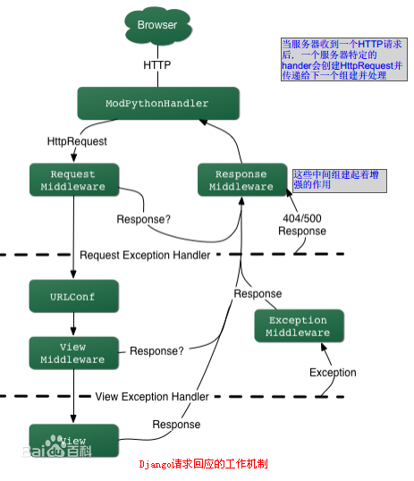

Django是一个开放源代码的Web应用框架，由Python写成。采用了MVC的框架模式，即模型M，视图V和控制器C。它最初是被开发来用于管理劳伦斯出版集团旗下的一些以新闻内容为主的网站的，即是CMS（内容管理系统）软件。并于2005年7月在BSD许可证下发布。这套框架是以比利时的吉普赛爵士吉他手Django Reinhardt来命名的。
- django 的特点
- 完全免费并开源源代码
- 快速高效开发
- 使用MTV模式(以MVC模式为原型)
- 强大的可扩展性.
- 社区丰富
- 第三方框架丰富
MVC是众所周知的模式，即：将应用程序分解成三个组成部分:model(模型),view(视图),和 controller(控制 器)。其中：
M——管理应用程序的状态（通常存储到数据库中），并约束改变状态的行为（或者叫做“业务规则”）。
C——接受外部用户的操作，根据操作访问模型获取数据，并调用“视图”显示这些数据。控制器是将“模型”和“视图”隔离，并成为二者之间的联系纽带。在django对应view。
V——负责把数据格式化后呈现给用户。
Django也是一个MVC框架。但是在Django中，控制器接受用户输入的部分由框架自行处理，所以 Django 里更关注的是模型（Model）、模板(Template)和视图（Views），称为 MTV模式：
M 代表模型（Model），即数据存取层。 该层处理与数据相关的所有事务： 如何存取、如何验证有效性、包含哪些行为以及数据之间的关系等。
T 代表模板(Template)，即表现层。 该层处理与表现相关的决定： 如何在页面或其他类型文档中进行显示。
V 代表视图（View），即业务逻辑层。 该层包含存取模型及调取恰当模板的相关逻辑。 你可以把它看作模型与模板之间的桥梁。
对象关系映射 (ORM,object-relational mapping)：以Python类形式定义你的数据模型，ORM将模型与关系数据库连接起来，你将得到一个非常容易使用的数据库API，同时你也可以在Django中使用原始的SQL语句。 URL 分派：使用正则表达式匹配URL，你可以设计任意的URL，没有框架的特定限定。像你喜欢的一样灵活。 模版系统：使用Django强大而可扩展的模板语言，可以分隔设计、内容和Python代码。并且具有可继承性。
表单处理：你可以方便的生成各种表单模型，实现表单的有效性检验。可以方便的从你定义的模型实例生成相应的表单。
Cache系统：可以挂在内存缓冲或其它的框架实现超级缓冲 －－ 实现你所需要的粒度。
国际化：内置国际化系统，方便开发出多种语言的网站。
自动化的管理界面：不需要你花大量的工作来创建人员管理和更新内容。Django自带一个ADMIN site,类似于内容管理系统
